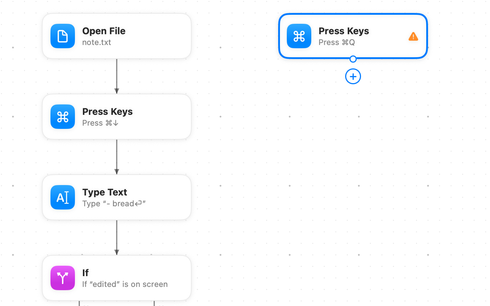
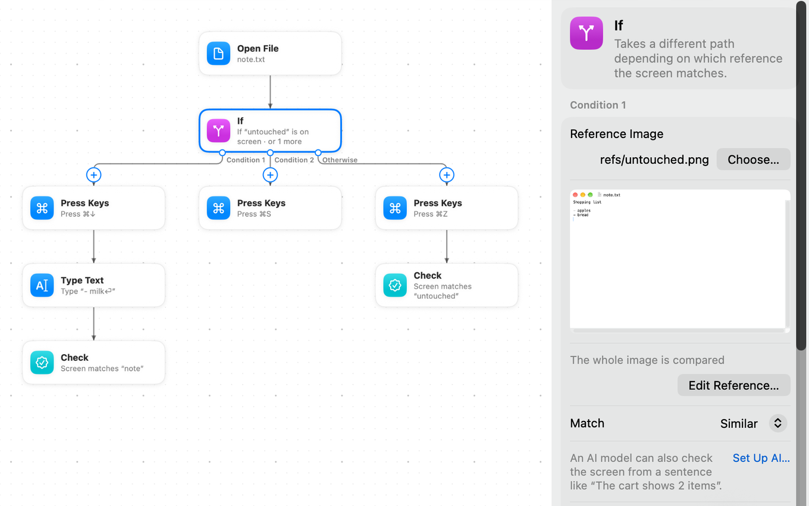

Writing tests
How a test is built from blocks, and every block type with its fields. Most people record tests and edit them on the canvas; this page also shows the JSON behind each block, for when you read a diff or write a test by hand.

How a test runs
A test is a set of blocks. Each block has an id, a name you choose such as open or sign-in, and a type that says what it does. Blocks point to each other by id with arrows:
next: the block that runs afterwards. Most blocks have only this arrow.thenandelse: the two ways out of anifblock.body: the first block inside a loop,repeatoruseData.
The run begins at the block named by start and follows the arrows. A block with nowhere to go ends the test; if no block failed, the test passed. Inside a loop, a block with nowhere to go ends the current pass of the loop instead.
Loops are the only place where arrows may go back to an earlier block. The body of a repeat or useData block is a chain of blocks whose last block leads back to the loop block with next; the editor draws it that way for you. Any other circle of arrows is an error, so a test can never get stuck going round forever.
Fields of a test
| Field | Required | Value |
|---|---|---|
format | Yes | File format version, 1. Files from an older JEVision are upgraded when read; files from a newer one are refused instead of being misread. |
name | Yes | Name of the test, shown everywhere. Can't be empty. |
description | No | What the test checks, in your words. |
icon | No | For a custom block: the name of an SF Symbol the block library shows for it, such as person.badge.key. |
app | Yes | Bundle identifier of the application under test, such as com.apple.TextEdit. At least two parts separated by dots, each made of letters, digits and -. |
testType | No | smoke, regression or acceptance. |
priority | No | critical, high, medium or low. |
status | No | draft, ready or outdated. |
tags | No | List of words for finding tests. No empty tags and no repeats. |
preconditions | No | What must be true before the test starts, such as Signed in as a teacher. |
author | No | Who wrote the test or looks after it. A test made in the app starts with the name from your git settings. Tests can be chosen by it, as by the other card fields. |
platform | No | Where the test is meant to run, such as macOS 26. |
link | No | Web address of the issue or requirement the test covers. Starts with https:// or http://. |
flaky | No | true marks a test that sometimes fails for reasons outside the app. The test still runs and counts; see Flaky tests. A test that keeps failing and passing by itself is also offered quarantine. |
retries | No | How many more times to run the test when it fails, 0 to 10. Without it, the project's default applies. See Retries. |
dependsOn | No | Tests that must pass before this one runs (Runs After in the editor), as paths of .flow.json files relative to this test file, each once. A run adds them when you didn't choose them and runs them first. When one of them doesn't pass, this test doesn't run and is marked blocked. |
start | Yes | Id of the first block. |
blocks | Yes | The blocks, as an object from id to block. |
canvas | No | How the test is drawn in the editor. It never changes how the test runs. See File formats. |
The card fields testType, priority, status and author, and the flaky mark, also choose which tests run. In the app, the filter button above the test list shows only the tests that fit, and Run All Tests then runs only those. On the command line use jevision run --priority high --type smoke, and an assistant can pass the same fields to list_tests. A test whose card leaves out a field you filter by isn't chosen.
Block ids use letters, digits, - and _, up to 64 characters, and are unique within the test. Unknown fields are an error, so a typo such as "nxet" never goes unnoticed.
Block types
The editor's block palette groups blocks by what they do: actions, waiting, checks, conditions and loops, sub-tests, data and system.
| Block | Group | What it does | Arrows |
|---|---|---|---|
openApp | Actions | Opens the application under test, or another one, optionally with command-line arguments and environment variables | next |
openFile | Actions | Opens files or web addresses | next |
click | Actions | Clicks an element found by its picture, its description or accessibility, a point or the middle of an area, with any button, optionally holding ⌃ ⌥ ⇧ ⌘ | next |
hover | Actions | Points at an element without clicking, optionally holding ⌃ ⌥ ⇧ ⌘ | next |
drag | Actions | Drags from one place to another with any button, optionally holding ⌃ ⌥ ⇧ ⌘ | next |
scroll | Actions | Turns the scroll wheel by lines or pixels, optionally holding ⌃ ⌥ ⇧ ⌘ | next |
type | Actions | Types text, optionally into a field | next |
pressKeys | Actions | Presses a key combination | next |
waitFor | Waiting | Waits for something to appear or disappear, for the screen to settle, or for an interface element to be in a state | next |
pause | Waiting | Waits a set time | next |
check | Checks | Fails the test unless the screen matches a reference, or an interface element is in a state | next |
if | Conditions and loops | Takes one of several ways depending on the screen, a value or an interface element | then, elseIf1…, else |
repeat | Conditions and loops | Runs its body a number of times | body, next |
runTest | Sub-tests | Runs another test as one step | next |
useData | Data | Runs its body once for every row of a CSV table | body, next |
script | Data and System | Runs a script with typed inputs and outputs | next |
clipboard | Data and System | Puts text or a picture on the clipboard, reads its text, picture or files into a variable, or checks its text | next |
dateTime | Data and System | Keeps the current date and time, moved if you like, in a language and time zone of your choice, as a variable | next |
http | Data and System | Sends a request to a web address, checks the answer and keeps parts of it as variables | next |
database | Data and System | Asks an SQLite database file, checks the answer and keeps it as a variable | next |
checkFile | Data and System | Waits until a file appears, disappears, changes or contains a text | next |
command | Data and System | Runs a Terminal command, checks how it ended and keeps what it printed as a variable | next |
In the tables below, every block also has type (its type name) and the arrow fields listed above. An arrow can be left out; a missing body is the only exception.
openApp: open an application
Launches an application and brings it to the front. Later blocks act on this application until another block opens a different one.
| Field | Required | Value |
|---|---|---|
app | No | Bundle identifier of another application. Leave it out to open the application under test (the test's app). |
resetState | No | true to quit a copy that is already running and start a new one that does not bring back its windows from last time. Default false. |
windowSize | No | The size of the main window in points, { "width": 900, "height": 640 }. Each side is 100 to 20000. |
windowPosition | No | Where the top-left corner of the main window sits, { "x": 80, "y": 60 }, in points from the top-left corner of the main display. A display to the left of or above it has negative numbers. |
arguments | No | Command-line arguments for the app, a list of texts: ["--demo-mode", "-AppleLanguages", "(en)"]. Each may hold placeholders. |
environment | No | Environment variables for the app, names to values: { "API_URL": "${env.API_URL}" }. Names are letters, digits and _, not starting with a digit; values may hold placeholders. |
{ "type": "openApp", "next": "email" }
{ "type": "openApp", "resetState": true, "arguments": ["--demo-mode"], "environment": { "API_URL": "${env.API_URL}" }, "next": "email" }arguments and environment reach the app only when this block starts it: a copy that is already running keeps what it was started with. Add "resetState": true to be sure they apply; the arguments then come after the ones that keep the app from bringing back its last windows. A secret in them, ${secret.NAME}, is passed to the app but never written to the report or the log.
Screenshots are only the same from run to run when the window is. With windowSize and windowPosition, JEVision sets them once the app is up and reads them back; if the window did not take them, the run stops at this block and says what size or position it has instead. Some windows can't be resized or moved, such as the windows of some utilities: the run then says so, and the fields have to go. Leave either field out to keep what the app chose.
resetState quits the running copy politely, so an app that asks to save or confirm first still gets to ask: the run stops and says so if the app does not quit. It does not delete anything: the app's settings, documents and caches stay as they are. To start the app as on its first launch, turn on Start apps as on their first launch in Settings → Advanced (cleanHome in the project settings file): for each such block the app gets an empty home folder of its own, which the run deletes when it ends, and starts without its settings, which come back once the run ends and the app has quit. Passwords in the Keychain, the list of recent documents and what the app keeps online are not reset. Apps in the macOS sandbox keep their data where macOS puts it, so for them the step says the reset was not applied. Checks look at the window of the application under test, never at the whole screen, so what lies around the window never changes the result.
openFile: open files or web addresses
Opens one or more files, or http:// and https:// addresses. Each file is opened from a fresh copy made in the run's folder, so the original stays as it was and every run starts from the same file.
| Field | Required | Value |
|---|---|---|
files | Yes | List of file paths relative to the test file, or web addresses. At least one. May hold placeholders. |
app | No | Bundle identifier of the application to open them in. Default: the one macOS chooses. When given, later blocks act on this application. |
newInstance | No | true to open them in a new instance of the application. Default: false. |
closeAfter | No | true to quit the applications this block started and close the copies of the files it opened when each try of the test ends, whether it passed or not. Default: false. |
{ "type": "openFile", "files": ["note.txt"], "app": "com.apple.TextEdit", "next": "end" }click: click on the screen
Brings the application to the front and clicks a target: an element found by its picture or by its description in words, a fixed point of the window or the middle of an area.
| Field | Required | Value |
|---|---|---|
target | Yes | Where to click: a target. |
button | No | "left" (default), "right" or "middle". |
double | No | true for a double click. Default: false. |
modifiers | No | Keys to hold down during the click: a list of "ctrl", "option", "shift" and "cmd", each at most once. For ⌘-click, ⇧-click to select a range, or ⌥-click. Default: none. See Keys held while the mouse works. |
waitForChange | No | true to wait, after clicking, until the screen changes, and fail if it doesn't change within 10 seconds. Default: false. |
{ "type": "click", "target": { "image": "refs/sign-in-button.png" }, "button": "left", "next": "inbox" }
{ "type": "click", "target": { "description": "the third file" }, "modifiers": ["cmd"], "next": "selected" }hover: point at an element
Brings the application to the front and moves the pointer onto a target, without clicking, and leaves it there: for tooltips, toolbar buttons that light up and menus that open on hover. Follow it with a waitFor for what should appear. A recording can't catch hovering, so add this block by hand.
| Field | Required | Value |
|---|---|---|
target | Yes | What to point at: a target. |
modifiers | No | Keys to hold down while the pointer moves, as for click: for menus and buttons that show something else while a key is held, such as "option". Default: none. |
waitForChange | No | true to wait until the screen changes, and fail if it doesn't change within 10 seconds. Default: false. |
{ "type": "hover", "target": { "image": "refs/help-button.png" }, "next": "tooltip" }
{ "type": "hover", "target": { "image": "refs/share-button.png" }, "modifiers": ["option"], "next": "other-choices" }drag: drag and drop
Brings the application to the front, presses a mouse button on one target, moves to another in small steps holding the button down, and lets go there: to move a file to a folder, reorder a list, resize a panel or select text. Both places are found on the screen as it is before the drag. The button and the keys of modifiers are let go even when the run is stopped halfway. Recording turns a press, a move and a release inside the window into this block, with the keys that were held and the button that was used.
| Field | Required | Value |
|---|---|---|
from | Yes | Where to press: a target. |
to | Yes | Where to let go: a target. It can't be the same place as from. |
button | No | "left" (default), "right" or "middle". |
modifiers | No | Keys to hold down during the drag, as for click: to copy instead of move ("option"), or to add to a selection ("cmd"). Default: none. |
waitForChange | No | true to wait, after letting go, until the screen changes, and fail if it doesn't change within 10 seconds. Default: false. |
{ "type": "drag", "from": { "image": "refs/report-file.png" }, "to": { "image": "refs/archive-folder.png" }, "next": "moved" }
{ "type": "drag", "from": { "image": "refs/report-file.png" }, "to": { "image": "refs/archive-folder.png" }, "modifiers": ["option"], "next": "copied" }scroll: turn the scroll wheel
Brings the application to the front, moves the pointer over the middle of the window or over a target, and turns the scroll wheel. down brings what is further down into sight, whatever the Natural scrolling setting of the Mac. Recording joins turns of the wheel in one direction into one block, in lines from a mouse wheel or pixels from a trackpad.
| Field | Required | Value |
|---|---|---|
direction | Yes | "up", "down", "left" or "right". |
amount | Yes | How far: a whole number from 1 to 10000. |
unit | No | "lines" (default), as a mouse wheel turns, or "pixels", as a trackpad scrolls. |
at | No | A target to scroll over, such as one list of several. Default: the middle of the window. |
modifiers | No | Keys to hold down while the wheel turns, as for click: with "cmd" most applications zoom instead of scrolling. Default: none. |
waitForChange | No | true to wait, after scrolling, until the screen changes, and fail if it doesn't change within 10 seconds. Default: false. |
{ "type": "scroll", "direction": "down", "amount": 5, "unit": "lines", "next": "footer" }
{ "type": "scroll", "direction": "up", "amount": 3, "at": { "area": "0.2,0.2,0.6,0.6" }, "modifiers": ["cmd"], "next": "zoomed" }type: type text
Brings the application to the front and types text, as if on the keyboard. With into, it first clicks that field. A line break in the text (\n in JSON) presses Return and a tab (\t) presses Tab.
| Field | Required | Value |
|---|---|---|
text | Yes | Text to type. Can't be empty. May hold placeholders such as ${secret.PASSWORD}. |
into | No | A target to click before typing. |
{ "type": "type", "text": "${secret.ACME_PASSWORD}", "into": { "image": "refs/password-field.png" }, "next": "submit" }pressKeys: press a key combination
Brings the application to the front and presses one key combination, such as ⌘S.
| Field | Required | Value |
|---|---|---|
keys | Yes | A key combination such as cmd+shift+s or return. |
{ "type": "pressKeys", "keys": "cmd+q" }waitFor: wait for the screen
Waits until something appears, disappears or the screen stops changing, or until an interface element is in a state. If that doesn't happen in time, the test fails at this block. Time while a run is paused doesn't count.
| Field | Required | Value |
|---|---|---|
until | Yes | One of: { "appears": reference }, { "disappears": reference }, "screenStable" or { "element": element check }. A reference is described in Checks and references, an element check in Interface element. |
timeout | No | How long to wait, a duration from 1ms to 60m. Default: 10s. |
{ "type": "waitFor", "until": { "appears": { "image": "refs/inbox.png" } }, "timeout": "10s", "next": "messages" }
{ "type": "waitFor", "until": "screenStable", "timeout": "5s", "next": "check" }
{ "type": "waitFor", "until": { "element": { "role": "button", "title": "Send", "is": "enabled" } }, "timeout": "10s", "next": "send" }Waiting for an element asks the app again and again, without a fixed pause, and goes on as soon as the element is as asked. When time runs out, the failure says what was looked for, what was expected and what the element was at the end; when it wasn't there at all, it lists similar elements of the window.
pause: wait a set time
Waits a set time, then goes on. Use it for an animation or a slow screen that gives no sign when it is ready; when something on the screen does show it, a waitFor is faster and surer. Time while a run is paused doesn't count.
| Field | Required | Value |
|---|---|---|
duration | Yes | How long to wait, a duration from 1ms to 60m. |
{ "type": "pause", "duration": "2s", "next": "check" }check: check the screen
Compares the screen with a reference and fails the test if they don't match, or checks an interface element instead. The reference can be a picture compared exactly or by similarity, or a sentence that an AI model checks. If the reference picture doesn't exist yet, the first run saves the screen as that picture. When the app changed on purpose, accept the new reference from the report: a picture shared by several tests is replaced together with a review of every block that uses it.
The reference picture can also be one the test made itself, such as a picture a script or clipboard block kept: "image": "${var.expected}" names a variable of type image. Such a picture is used as it is, with no .dark version, and it is never saved from the screen: if the file isn't there, the block fails.
| Field | Required | Value |
|---|---|---|
reference | Yes, unless element is given | What the screen should show: a reference. |
element | Instead of reference | An interface element and the state it should be in: an element check. |
{ "type": "check", "reference": { "image": "refs/message-list.png", "compare": "similar", "threshold": 0.9 } }
{ "type": "check", "reference": { "compare": "meaning", "expect": "The inbox lists at least one message" } }
{ "type": "check", "element": { "role": "textField", "id": "email", "is": "valueEquals", "to": "${data.email}" } }A check of an element looks once. When it fails, the report says which element it looked for, what it expected and what the element is instead, such as Expected: value “Ann”. Actual: value “Bo”. An element that isn't there comes with a list of similar ones in the window, so a changed title or id is easy to put right.
if: choose a way
Looks at the screen once. If it matches the reference, the test goes on at then; otherwise at else. A missing then or else ends the test on that way. Use it for screens that show up only sometimes, such as a “What's new” window.
For more than two ways, add conditions in elseIf (Add Condition in the inspector). They are checked in order on the same screenshot: the first one the screen matches wins, and else is taken when none does. On the canvas the ways out read Condition 1, Condition 2… and Otherwise; in a link or a tool call they are called then, elseIf1, elseIf2… and else. The run report records which one the test took.

Unlike check, an if block never saves a missing reference picture: a missing picture stops the run with an error.
| Field | Required | Value |
|---|---|---|
reference | Yes, unless value is given | What to look for: a reference. |
value | Instead of reference | A condition on a value instead of the screen: { "of": "${env.ENVIRONMENT}", "is": "equals", "to": "prod" }. of and to may hold placeholders; is is "equals", "notEquals", "contains", "greaterThan" or "lessThan", the last two reading both sides as numbers. Each condition, including each elseIf, uses one of reference, value and element. |
element | Instead of reference | A condition on an interface element: an element check, such as { "role": "checkBox", "title": "Remember me", "is": "selected" }. An element that isn't there makes the condition false, unless it asks for "absent". |
then | No | Id of the block to go to when the condition holds. |
elseIf | No | More conditions, checked in order when the first one doesn't hold: a list of { "reference": …, "then": "…" } or { "value": …, "then": "…" }, where then is optional. A condition that repeats an earlier one is reported, because it can never be chosen. |
else | No | Id of the block to go to when no condition matches. |
{ "type": "if", "reference": { "image": "refs/welcome-dialog.png" }, "then": "close-welcome", "else": "compose" }
{ "type": "if", "element": { "role": "button", "title": "Sign In", "is": "present" }, "then": "sign-in", "else": "compose" }
{
"type": "if",
"reference": { "image": "refs/sign-in.png" },
"then": "sign-in",
"elseIf": [{ "reference": { "image": "refs/update.png" }, "then": "skip-update" }],
"else": "compose"
}
{ "type": "if", "value": { "of": "${env.ENVIRONMENT}", "is": "equals", "to": "prod" }, "then": "careful-path", "else": "compose" }A condition on a value doesn't look at the screen, so it never needs a reference picture. Branching on ${env.ENVIRONMENT} lets one test take another way in each environment.
repeat: run blocks several times
Runs the chain of blocks that starts at body a number of times, then goes to next. The last block of the body leads back to the repeat block.
| Field | Required | Value |
|---|---|---|
times | Yes | How many times, 1 to 10000. |
body | Yes | Id of the first block inside the loop. It can't be the repeat block itself. |
"three-lines": { "type": "repeat", "times": 3, "body": "add-line", "next": "save" },
"add-line": { "type": "type", "text": "- milk\n", "next": "three-lines" }useData: run blocks for every row of a table
Runs the chain of blocks that starts at body once for every row of a CSV file, then goes to next. Blocks read the current row's values as ${data.COLUMN}. The first useData block of a test does more: the whole test runs once per row. See Data-driven tests.
| Field | Required | Value |
|---|---|---|
file | Yes | Path of a .csv file, relative to the test file. May hold placeholders. |
body | Yes | Id of the first block inside the loop. It can't be the useData block itself. |
{ "type": "useData", "file": "data/accounts.csv", "body": "email", "next": "done" }runTest: run another test
Runs another test file as one step, then comes back and goes to next. Use it for parts many tests share, such as signing in. The other test acts on its own application, uses the same environment, and its failure fails this test. A test can't run itself, directly or through other tests.
The file may also be a custom block: a .block.json file you made, or the flow.json of a package installed from someone else. A custom block reads the values you give it in inputs as ${input.NAME}.
| Field | Required | Value |
|---|---|---|
test | Yes | Path of a .flow.json file or of a custom block (.block.json, or flow.json in a .jevblock folder), relative to this test file. May hold placeholders. |
package | No | For a block from the community: the version the test was made with, such as "1.2.0", and the source it can be installed from, an https:// address. JEVision writes it when you add the block from the library. When the block isn't installed, the error names it, such as This step needs the block “com.acme.sign-in 1.2.0”, and offers Install…. Tests without it still work. |
inputs | No | Values for a custom block, by the name it asks for: { "email": "${env.USER_EMAIL}" }. May hold placeholders of this test. A value the block needs and doesn't get is a warning, and stops the run, unless the block has a default for it. |
{ "type": "runTest", "test": "sign-in.flow.json", "next": "compose" }
{ "type": "runTest", "test": "blocks/com.acme.sign-in.jevblock/flow.json", "package": { "version": "1.2.0", "source": "https://github.com/acme/sign-in" }, "inputs": { "email": "anna@example.com" }, "next": "compose" }script: run a script
Runs a script in sh, zsh, python3, node or appleScript. Each input reaches it as an environment variable. It reports each output as a name=value line written to the file named by $JEV_OUTPUT, and the run keeps it as the variable ${var.NAME}. A script that exits with a code other than 0 fails the block.
| Field | Required | Value |
|---|---|---|
language | Yes | "sh", "zsh", "python3", "node" or "appleScript". |
code | Yes | The script. |
inputs | No | A list of { "name", "type", "value" }. name is the environment variable (letters, digits and _, each name once). type is one of the value types; default "text". value may hold placeholders. |
outputs | No | A list of { "name", "type" }: the variables the script reports and the value type of each. |
timeout | No | How long the script may run. Default: "30s". |
{ "type": "script", "language": "python3", "code": "import os\nprint('shot=' + os.environ['PICTURE'], file=open(os.environ['JEV_OUTPUT'], 'a'))",
"inputs": [{ "name": "PICTURE", "type": "image", "value": "refs/sign-in-button.png" }],
"outputs": [{ "name": "shot", "type": "image" }], "next": "after" }Value types
text: any text.number: a number such as42or3.5.boolean:trueorfalse.image: a PNG file, written as an absolute path, a path from the home folder (~/shot.png) or a path relative to the test file. The script gets the absolute path, and the file has to exist when the block runs.area: a rectangle in fractions (0 to 1) of the window, asx,y,width,height:0.1,0.2,0.5,0.3is a box starting a tenth from the left and a fifth from the top.
JEVision checks the type wherever it can: a value written out in full has to fit its type, and an input that is just ${var.NAME} has to take a variable of a type it can use (text takes any; another type takes the same type or text). A value that is only known when the test runs is checked then, and the block fails with a message that names the input. The same goes for the picture or area of a target, the picture of a reference and the picture a clipboard block puts: ${var.NAME} there has to be a variable of type image or area, or text.
clipboard: put, read or check the clipboard
Works with the Mac's clipboard. Put copies text or a picture there as if someone had pressed ⌘C, so the next ⌘V in the application pastes it; read keeps its text, its picture or the files copied in the Finder as a variable; check waits until its text matches. action says which one the block is, and each has its own fields.
| Field | Required | Value |
|---|---|---|
action | Yes | "put", "read" or "check". |
text | For put, or image | The text to put. May hold placeholders, including secrets. |
image | For put, or text | The picture to put: a PNG file, by a path such as refs/logo.png, or ${var.NAME} of a variable of type image. A file that isn't a PNG fails the block. |
saveAs | For read | Name of the variable that gets what was read, used as ${var.NAME}. |
content | No, for read | What to read: "text" (default); "image", the picture, saved as a PNG file with the run and kept as a variable of type image that holds its full path; or "files", the full paths of the files copied, one to a line. The block fails if the clipboard holds no picture or no files. |
is | For check | "equals", "notEquals", "contains", "greaterThan" or "lessThan". The last two read both sides as numbers. |
to | For check | What to compare with. May hold placeholders. |
timeout | For check | How long to wait for the clipboard to match before failing the block. |
{ "type": "clipboard", "action": "put", "text": "order ${data.id}", "next": "paste" }
{ "type": "clipboard", "action": "read", "saveAs": "copied", "next": "same" }
{ "type": "clipboard", "action": "put", "image": "refs/logo.png", "next": "paste-logo" }
{ "type": "clipboard", "action": "read", "content": "image", "saveAs": "pasted", "next": "compare" }
{ "type": "clipboard", "action": "check", "is": "contains", "to": "${var.copied}", "timeout": "5s", "next": "done" }The clipboard is shared by everything on the Mac: put replaces what was there, and the text stays there after the run, so don't put secrets on it unless you have to. A text with a secret in it is hidden in reports. For this reason, a test with a clipboard block doesn't run at the same time as another test that uses the screen. If the application you copy from or paste into belongs to another vendor, macOS may ask once whether it may read the clipboard.
dateTime: keep the date and time
Keeps the current date and time, in the Mac's time zone or one you name, as a variable, written the way you choose and moved forward or back if you like: a unique name for each run, yesterday's date to type into a form, a deadline a month ahead. It doesn't use the screen. Read it as ${var.NAME} in a later block.
| Field | Required | Value |
|---|---|---|
saveAs | Yes | Name of the variable that gets the text. |
format | No | How to write it: %Y year, %m month, %d day, %H hour (00–23), %M minute, %S second, %B month name, %A day name, %s seconds since 1970, and the others strftime knows. Month and day names follow language: %B and %b the month in full and short, %A and %a the day in full and short; in Russian %B is the month as it is said after a day (31 марта) and %OB the month by itself (март 2026). With ^, such as %^B, a name is in capitals. Default: "%Y-%m-%d %H:%M:%S", such as 2026-03-31 14:05:09. |
language | No | The language of month and day names: "en" (English) or "ru" (Russian). Default: the language of the JEVision app; English when the test runs from the command line. |
timeZone | No | The time zone to tell the time in, by its IANA name, such as "Europe/Berlin", "America/New_York" or "UTC". Default: the time zone of the Mac. |
shift | No | { "amount": -2, "unit": "days" }: a whole number, negative to go back, of seconds, minutes, hours, days, weeks, months or years. Moving by months or years keeps the day, or the last day of a shorter month. |
{ "type": "dateTime", "saveAs": "deadline", "format": "%d.%m.%Y", "shift": { "amount": 1, "unit": "months" }, "next": "fill" }
{ "type": "dateTime", "saveAs": "today", "format": "%A, %-d %B %Y", "language": "ru", "timeZone": "Europe/Moscow", "next": "type-date" }On 31 March 2026, %A, %-d %B %Y is Tuesday, 31 March 2026 in English and вторник, 31 марта 2026 in Russian; %OB %Y is March 2026 and март 2026. A language or timeZone JEVision doesn't know makes the test unreadable.
http: send a web request
Sends a request to a web address, such as the server behind the application, and fails the block unless the answer has the status you expect. Use it to set up data before the test or to check what the application sent. It doesn't use the screen. Parts of the answer can be kept as variables for later blocks.
| Field | Required | Value |
|---|---|---|
method | No | "GET" (default), "POST", "PUT", "PATCH", "DELETE" or "HEAD". |
url | Yes | The address, starting with https:// or http://. May hold placeholders. |
headers | No | A list of { "name", "value" }. The value may hold placeholders, such as a token from a secret. |
body | No | The text to send. May hold placeholders. A body that is valid JSON is sent with the header Content-Type: application/json, unless headers has a Content-Type of its own. |
expectStatus | No | "success" (default), any status from 200 to 299; "any", any answer at all; or one status code from 100 to 599, such as 201. |
save | No | A list of { "name", "from" }: the variable to keep, used as ${var.NAME}, and the part of the answer it gets. from is "status", "body", "body.PATH" for a value inside a JSON answer, such as body.items[0].id, or "header.NAME" for a header, in any case. A part the answer doesn't have fails the block. |
timeout | No | How long to wait for the answer. Default: "30s". |
{ "type": "http", "url": "https://api.example.com/health", "next": "open" }
{ "type": "http", "method": "POST", "url": "https://api.example.com/users", "headers": [{ "name": "Authorization", "value": "Bearer ${secret.API_TOKEN}" }], "body": "{ \"name\": \"Anna\" }", "expectStatus": 201, "save": [{ "name": "userId", "from": "body.id" }], "next": "open" }database: ask an SQLite database
Runs an SQL query on an SQLite database file, such as the one an application keeps its data in, and keeps the first value of the first row as a variable. With expect, it asks again until the answer is as expected, and fails the block when the time is up. It doesn't use the screen.
| Field | Required | Value |
|---|---|---|
file | Yes | The database file: a path relative to the test file, an absolute path or a path from the home folder (~/Library/…). May hold placeholders. A file that isn't there fails the block. |
query | Yes | The SQL query. May hold placeholders. |
saveAs | No | Name of the variable that gets the first value of the first row, used as ${var.NAME}. Empty when there is no row or the value is NULL. |
expect | No | { "value": "paid" }: the first value of the first row, compared as numbers when both sides are numbers; it may hold placeholders. Or { "rows": 2 }: the number of rows. |
timeout | No | How long to keep asking until the answer matches expect. Default: "10s". |
{ "type": "database", "file": "~/Library/Application Support/AcmeMail/mail.sqlite", "query": "SELECT count(*) FROM messages WHERE unread = 1", "saveAs": "unread", "next": "badge" }
{ "type": "database", "file": "data/shop.sqlite", "query": "SELECT status FROM orders WHERE id = '${var.orderId}'", "expect": { "value": "paid" }, "timeout": "20s", "next": "done" }A query that SQLite can't run fails the block at once, with SQLite's reason.
checkFile: wait for a file
Waits until a file appears, disappears, changes or contains a text, such as a file the application exports or a line in its log. If that doesn't happen in time, the test fails at this block. It doesn't use the screen.
| Field | Required | Value |
|---|---|---|
path | Yes | The file: a path relative to the test file, an absolute path or a path from the home folder (~/Downloads/report.pdf). May hold placeholders. |
until | Yes | "exists", "missing", "changed" (changed since this try of the test started) or { "contains": "Saved" }. The text may hold placeholders. |
timeout | No | How long to wait. Default: "10s". |
{ "type": "checkFile", "path": "~/Downloads/report.pdf", "until": "exists", "timeout": "30s", "next": "open-report" }
{ "type": "checkFile", "path": "logs/app.log", "until": { "contains": "Saved" }, "next": "done" }command: run a Terminal command
Runs a command in zsh, as you would in Terminal, with your permissions, and fails the block unless it ends with the exit code you expect. Use it to prepare the Mac before a test or tidy up after it. It doesn't use the screen. For a script with typed inputs and outputs, use a script block.
| Field | Required | Value |
|---|---|---|
command | Yes | The command. JEVision fills in its placeholders; any other ${…}, such as ${HOME}, is left for the shell. |
folder | No | The folder it runs in, relative to the test file. Default: the folder of the test file. The variable JEV_PROJECT holds the project folder. |
exitCode | No | The exit code that counts as success, 0 to 255. Default: 0. |
saveOutput | No | Name of the variable that gets what the command printed, without the last line break, used as ${var.NAME}. |
timeout | No | How long the command may run. Default: "30s". |
{ "type": "command", "command": "sw_vers -productVersion", "saveOutput": "macos", "next": "open" }
{ "type": "command", "command": "./reset-server.sh", "folder": "tools", "timeout": "2m", "next": "open" }Targets, areas, durations and paths
Target
Where on screen a click, a hover, either end of a drag, the at of a scroll or the into of a type happens. Exactly one of:
{ "image": "refs/button.png" }: the element that looks like this picture, found on the current screen. This keeps working when the window moves or changes size.{ "description": "the blue Save button" }: the element described in words, found on the current screen by JEV, from TypeSafe AI or through Cloudflare, and clicked in its middle. JEV must be set up in Settings → AI, even when another provider checks by meaning; the screenshot is masked before it is sent, as for checks by meaning, and finding needs model jev-1.14.0 or newer (typesafe/jev-1.14.0on Cloudflare), or jev-latest.{ "element": { "role": "button", "title": "Save" } }: an interface element the app tells macOS accessibility about, clicked in its middle. It needs no picture and no AI, and keeps working when the look of the app changes.{ "point": { "x": 0.5, "y": 0.2 } }: a fixed point, in fractions of the window from its top-left corner.xandygo from 0 to 1.{ "area": "0.1,0.2,0.3,0.1" }: the middle of an area, writtenx,y,width,heightin fractions of the window as for theareatype, or${var.NAME}of a variable of that type, such as one ascriptreports. Adragbetween two areas goes from the middle of one to the middle of the other. An area that isn't four numbers inside the window is an error, or fails the block when it comes from a variable.
The picture can also be one the test made itself: { "image": "${var.shot}" } names a variable of type image, a PNG file given by an absolute path, a path from the home folder (~/shot.png) or a path relative to the test file. Such a picture is used as it is, with no .dark version.
Interface element
An element found by what the app tells macOS accessibility about it, in the front window of the app or in a menu open in it. JEVision needs the Accessibility permission for it, the same one it needs to click and type. An app that draws its interface without accessibility support, such as some games, shows no elements: find those by a picture or a description instead.
| Field | Required | Value |
|---|---|---|
id | One of id, role and title | The accessibility identifier the developers gave the element, matched exactly. The steadiest way to find it. |
role | One of id, role and title | The kind of element: button, link, checkBox, switch, radioButton, radioGroup, textField, secureTextField, searchField, textArea, comboBox, popUpButton, menuButton, menuItem, slider, stepper, staticText, image, tabGroup, list, table, outline, row, cell, disclosureTriangle, progressIndicator, busyIndicator, colorWell, scrollArea, group, toolbar, sheet, window. A switch is a checkBox too. Any other kind is an error. |
title | One of id, role and title | What the element is called on screen, matched exactly, capitals included: its title, else its accessibility description, else the text of a text element, else the grey hint of an empty field. |
index | No | Which of the matching elements, when several match: 0 is the first, in the order the window lists them, usually from the top. Without it, several matches stop the block with a list of what was found. |
id and title may hold placeholders. A target is the element alone; check, if and waitFor take an element check: the same fields and is, the state it should be in, with to for the states that compare text.
is | Holds when the element |
|---|---|
present, absent | is in the window, or isn't. Several matches count as present. |
enabled, disabled | can be used, or is dimmed. |
selected, notSelected | is selected, such as a row of a list, or checked, such as a checkbox, a switch or a radio button; or isn't. |
valueEquals, valueContains | has a value, such as the text of a field, that is exactly to, or contains it. |
titleEquals, titleContains | is called exactly to on screen, or something containing it. |
{ "type": "click", "target": { "element": { "id": "save-button" } }, "next": "saved" }
{ "type": "type", "text": "Ann", "into": { "element": { "role": "textField", "title": "Name" } }, "next": "save" }
{ "type": "check", "element": { "role": "row", "index": 0, "is": "titleContains", "to": "Invoice" } }to may hold placeholders, and a secret in it never shows in a report. The value of a password field is never read.
Area
{ "x": 0.8, "y": 0, "width": 0.2, "height": 0.1 }: a rectangle in fractions (0 to 1) of the window or picture, from its top-left corner. Width and height are above 0, and the rectangle fits inside: x + width and y + height are at most 1. Areas are used by references.
Duration
Text with a whole number and a unit: 500ms, 10s or 2m.
Paths
Pictures, files, data tables and other tests are named by paths relative to the folder of the test file, written with /, such as refs/inbox.png. A path can't start with / or ~, and the files must stay inside the project folder. Two kinds may be anywhere on the Mac: a picture named by a variable, ${var.NAME}, and the file of a checkFile or database block, which may also be an absolute path or start with ~/. Keeping paths relative means the tests work on any Mac that has the project.
Placeholders
Some fields can hold values that are filled in when the test runs:
${secret.NAME}: a secret, such as a password, from the Keychain or an environment variable. It is never stored in the file. See Secrets.${env.NAME}: a value of the chosen environment, such as a server address.${env.ENVIRONMENT}is the name of the environment itself.${data.COLUMN}: a value from the current row of a data table.${var.NAME}: a value an earlier block of the run kept: an output of ascript, or what aclipboard,dateTime,http,databaseorcommandblock saved.${input.NAME}: in a custom block, a value the test that runs it gives ininputs.
They work in these fields:
argumentsandenvironmentofopenApp;id,titleandtoof an interface element;textoftype;filesofopenFile;fileofuseData;testandinputsofrunTest;ofandtoof a condition ofif;valueof the inputs ofscript;text,imageandtoofclipboard;url, header values andbodyofhttp;file,queryand the expectedvalueofdatabase;pathand thecontainstext ofcheckFile;commandandfolderofcommand.
The picture or area of a target and the picture of a reference may also be ${var.NAME}. Names start with a letter or _ and go on with letters, digits and _. Anything else written as ${…} is reported as an error, except in a command, where it is left for the shell.
Key combinations
A key combination is written in lowercase with + between its parts: zero or more modifiers, then one key.
- Modifiers:
cmd,shift,option,ctrl, each at most once. - Key: a lowercase letter, a digit, one of
- = [ ] \ ; ' , . / `, a function keyf1tof20, or one ofreturn,tab,space,delete,forwarddelete,escape,up,down,left,right,home,end,pageup,pagedown.
Examples: cmd+s, cmd+shift+s, return, ctrl+option+f5. For a capital letter, add shift; to type text, use a type block.
Keys held while the mouse works
The modifiers of a click, hover, drag or scroll is a list of the keys held down while the mouse works: "ctrl" (⌃), "option" (⌥), "shift" (⇧) and "cmd" (⌘). In the file they are always written in the order cmd, shift, option, ctrl, and an empty list is left out. The keys are pressed before the mouse moves and let go when the mouse is done, after the button is up, the pointer has arrived or the wheel has turned, even when the run is stopped.
Problems JEVision reports
The editor, jevision validate and AI assistants all check tests the same way. Every problem names the block and the field it concerns. Errors stop a test from running; warnings don't.
Errors
- The file isn't valid JSON, has an unknown field or block type, or a field of the wrong kind.
- An empty name, text, key combination, file list, command, web address, query or file path; an invalid bundle identifier, block id or key combination; an empty or repeated tag, or a
linkthat doesn't start withhttps://orhttp://. - A
dependsOnentry that isn't the path of a.flow.jsontest, names a test that doesn't exist or the test itself, or is listed twice; or tests that wait for each other in a circle. - Two blocks with the same id;
startor an arrow that names a block that doesn't exist. - A circle of arrows outside a loop body, or a loop whose body is the loop block itself.
- A number out of range:
retries0–10,times1–10000,timeoutandduration1ms–60m,thresholdabove 0 and at most 1, a scrollamount1–10000, a window side 100–20000, a window position −20000 to 20000,exitCode0–255,expectStatus100–599, adateTimeshift−100000 to 100000. - A point or area outside the window, or an
areatarget that isn't writtenx,y,width,height; an absolute path outside acheckFileordatabaseblock; adragthat starts and ends at the same place; auseDatafile that isn't.csvor arunTestfile that isn't a.flow.jsontest, a.block.jsonblock or theflow.jsonof a package. - A
runTestof a block from the community that isn't installed in the project, apackagewhoseversiondoesn't look like1.2.0or whosesourcedoesn't start withhttps://, or aninputsname that isn't letters, digits and_. - A malformed placeholder, an
${env.NAME}that no environment has, or a${data.COLUMN}the table doesn't have. - A variable name that isn't letters, digits and
_, or one block that keeps two variables of the same name. - An
httpaddress that isn't a web address, a header name with spaces or other characters a header can't have, or asavewhosefromisn'tstatus,body,body.PATHorheader.NAME. - A
dateTimeformatthat isn't valid, or agreaterThanorlessThancompared with something that isn't a number. - A picture, area or script input that is just
${var.NAME}when every block that keeps NAME keeps a value of a type that doesn't fit (text always fits). - A
dateTimelanguageother thanenorru, or atimeZonethat isn't an IANA name. thresholdwithout"compare": "similar";expect,providerormodelwithout"compare": "meaning"; aproviderJEVision doesn't know.- A note file or link that is neither a plain file name nor a web address, or two replies of a note with the same id.
Warnings
- A block that can't be reached from
start. - A loop body that never leads back to its loop block.
- A note about a block that doesn't exist.
- A file the test reads that doesn't exist yet. For a
checkblock this is expected before the first run, which saves the picture. - An
${env.NAME}that only some environments have. - A
runTestof a custom block that gives no value for an input the block reads and has no default for. - A
${var.NAME}that no block of the test keeps. A test it runs may keep it, so this is only a warning. - An
ifcondition that repeats an earlier one of the same block, so it can never be chosen. - A test that checks nothing: no
check, nowaitForfor something to appear or disappear, nohttp,checkFile,databasewithexpect,clipboardcheck orrunTest. Such a test can't catch a wrong result.
Canonical form
JEVision always writes a test the same way: keys in a fixed order, blocks in reading order (from start, following the arrows), two-space indentation, settings that are off or empty left out, and the click button, the scroll unit, the HTTP method, the comparison and every timeout always written out. The same test always gives the same bytes, so a change in git shows up as a small, readable diff. jevision fmt rewrites files you edited by hand in this form, and jevision fmt --check only reports the ones that aren't. See Command line.
Editing on the canvas
- Every change is saved to the test file at once and can be undone with ⌘Z.
- Problems are listed on the block they concern.
- To add a block, press Space or ⌘B, or click Add Block in the toolbar. The palette takes keyboard focus immediately and closes with Escape or a click outside. It lists every block with its icon and one line on what it does; type to search, then press Return to add the block after the selected one, or drag it onto the canvas to place it there. Dropped on a block, it goes right after that block.
- Right-click the empty canvas to add a block at that spot. Drag a block's link dot onto the empty canvas to choose the next block: it is added there and linked.
- Add If in the toolbar (⇧⌘B) adds an
ifafter the selected block; with anifselected, it adds one more condition to it. - Right-click a block to run from it, pause there, add an
ifafter it (or a condition to it), disconnect it from the blocks around it, duplicate, copy, paste after or delete it. ⌘L links the selected block to another one from the keyboard; ⌥⌘L disconnects it. - Run from any block (⇧⌘Return runs from the selected one), or set breakpoints to pause the run there; Run Step by Step (⌥⌘R) pauses after every block. When a run fails, Show Failed Block selects the block it stopped at and shows why.
- ⌘K opens the command palette: type a few letters of any command, block or test, then press Return to run the command, add the block or open the test.
- Drag empty space to pan; hold Shift while dragging to select an area. Scroll or pinch to zoom around the pointer. Blocks can move left or above the drawing’s origin. Opening the inspector keeps the drawing in place. The minimap in the lower-right corner shows the test and the visible area: click or drag it to move around, or hide it with its close button.
- Move blocks by hand, frame parts of the test in titled sections and add notes. All of this is kept in the test's
canvasand never changes how the test runs. Without it, blocks are laid out automatically. - Notes say why, not what. Right-click a block and choose Add Note to Block: the note stands beside the block, a dashed line joins them, the note moves with the block and shows in the block's inspector. Choose in the note's inspector whether it is about the test, the folder or a block. Deleting a block that has notes asks whether to delete the notes with it or keep them on the canvas. The format is in Notes.
- Write in Markdown: lists, check boxes, links, bold and italic text. Editing shows the source; the canvas and the inspector show it styled.
@and a few letters suggest the people who committed to the project. - Attach pictures, videos, PDFs and other files (choose them or drop them on the note) and add links, including links to GitHub issues, which show their number, title and state when you are signed in to GitHub. Files are copied next to the test and move with it. A file over the limit in Settings asks first, and can be tracked with Git LFS.
- Answer under a note, mention colleagues and mark the discussion Resolved; Hide Resolved Notes in the toolbar's notes menu clears them from the canvas. Every note shows who wrote it and when, and its history from git.
- Write in Markdown: lists, check boxes, links, bold and italic text. Editing shows the source; the canvas and the inspector show it styled.
- A test you record is laid out in rows: three blocks in a row from left to right, then the next row below, each row in a light frame. Tests you already have keep the layout they have. Arrange in Rows in the toolbar's menu puts the blocks of any test in rows the same way (undo with ⌘Z); Arrange Automatically lays them out by the arrows instead. Branches and loops stay readable: a way out that goes elsewhere is routed around the blocks between.
- The environment the test runs in is shown at the top right of the canvas, with the values the test reads from it. Click it to switch the environment, change those values or see which secrets are set. Hover a block that reads a value to see what it gets.